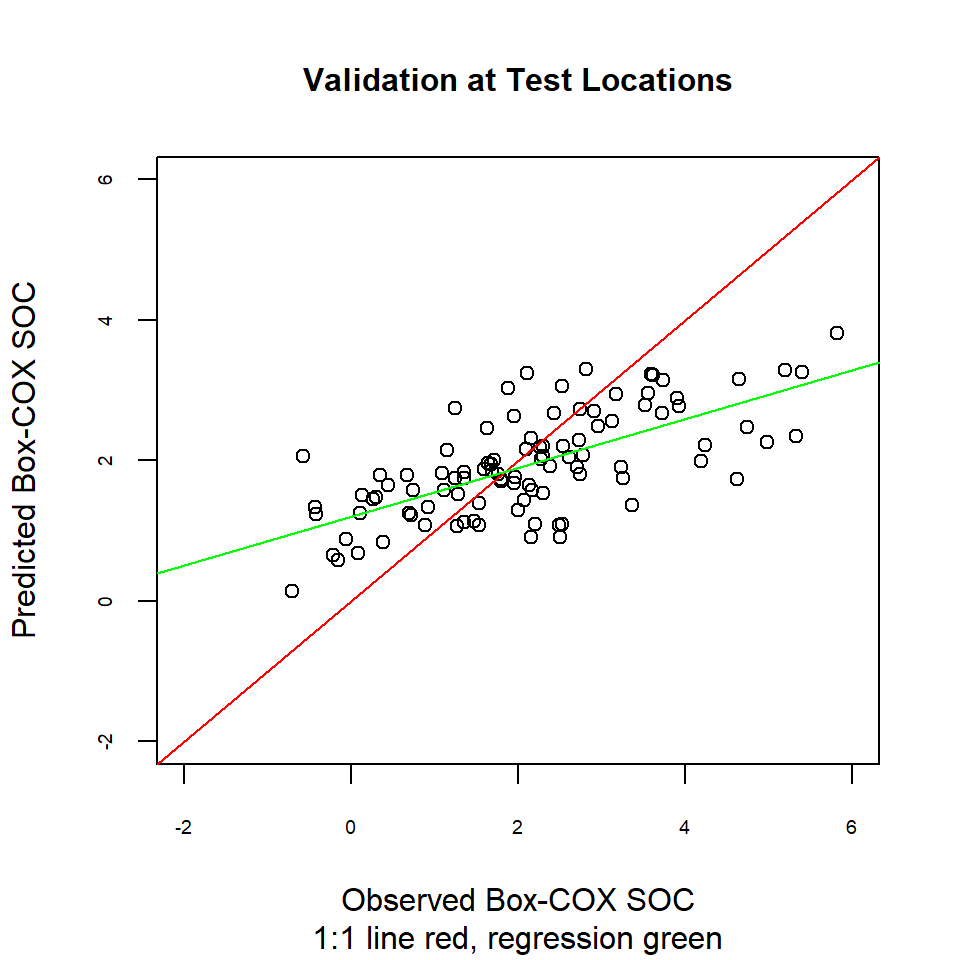

Validation with an Independent Data Set
This section we use SOC data at 89 test locations to validate ordinary kriging prediction from 386 training data. Since we will not use the 89 points of the test data set either to fit the model or to predict, these are an independent test of the model. We can compare the predictions to the actual values.
Load package
library(plyr)
library(dplyr)
library(gstat)
library(raster)
library(ggplot2)
library(car)
library(classInt)
library(RStoolbox)
library(spatstat)
library(dismo)
library(fields)
library(gridExtra)Load data
The soil organic carbon data (train and test data set) that we have created before is available for download from here.
# Define data folder
dataFolder<-"F:\\Spatial_Data_Processing_and_Analysis_R\\Data\\DATA_08\\"train<-read.csv(paste0(dataFolder,"train_data.csv"), header= TRUE)
test<-read.csv(paste0(dataFolder,"test_data.csv"), header= TRUE) Data Transformation
Power Transform uses the maximum likelihood-like approach of Box and Cox (1964) to select a transformation of a univariate or multivariate response for normality. First we have to calculate appropriate transformation parameters using powerTransform() function of car package and then use this parameter to transform the data using bcPower() function.
powerTransform(train$SOC)## Estimated transformation parameter
## train$SOC
## 0.2523339powerTransform(test$SOC)## Estimated transformation parameter
## test$SOC
## 0.3379903train$SOC.bc<-bcPower(train$SOC, 0.2523339)
test$SOC.bc<-bcPower(test$SOC, 0.3379903)Define coordinates
coordinates(train) = ~x+y
coordinates(test) = ~x+yVariogram Modeling
# Variogram
v<-variogram(SOC.bc~ 1, data = train, cloud=F)
# Intial parameter set by eye esitmation
m<-vgm(1.5,"Exp",40000,0.5)
# least square fit
m.f<-fit.variogram(v, m)
m.f## model psill range
## 1 Nug 0.5165678 0.00
## 2 Exp 1.0816886 82374.23Prediction at test locations
We will evaluate the model with k-fold cross validation. We will use krige.cv() function
val<-krige(SOC.bc ~ 1,
train,
test,
model = m.f)## [using ordinary kriging]summary(val)## Object of class SpatialPointsDataFrame
## Coordinates:
## min max
## x -1185457 95251.19
## y 1102846 2514145.42
## Is projected: NA
## proj4string : [NA]
## Number of points: 101
## Data attributes:
## var1.pred var1.var
## Min. :0.1426 Min. :0.7888
## 1st Qu.:1.3910 1st Qu.:0.9471
## Median :1.8303 Median :1.0099
## Mean :1.9214 Mean :1.0212
## 3rd Qu.:2.4667 3rd Qu.:1.0756
## Max. :3.8089 Max. :1.3132Calculate the Residuals
test$SOC.pred<-val$var1.pred
test$SOC.var<-val$var1.var
test$residual<-(test$SOC.bc-test$SOC.pred)Residuals plot
bubble(test, zcol = "residual", maxsize = 2.0, main = "Residuals at Test Data")
Error
# Mean Error (ME)
ME<-round(mean(test$residual),3)
# Mean Absolute Error
MAE<-round(mean(abs(test$residual)),3)
# Root Mean Squre Error (RMSE)
RMSE<-round(sqrt(mean(test$residual^2)),3)
# Mean Squared Deviation Ratio (MSDR)
MSDR<-mean(test$residual^2/test$SOC.var)
ME## [1] 0.152MAE## [1] 0.873RMSE## [1] 1.126MSDR## [1] 1.267439Actual vs. predicted values: linear regression
Another way to compare actual vs. predicted values is by a linear regression between them. Ideally, this would be a 1:1 line: intercept is 0 (no bias) and the slope is set at 1 (gain is equal).
lm.val <- lm(test$SOC.pred ~ test$SOC.bc)
summary(lm.val)##
## Call:
## lm(formula = test$SOC.pred ~ test$SOC.bc)
##
## Residuals:
## Min 1Q Median 3Q Max
## -1.16895 -0.42721 0.07515 0.28345 1.30121
##
## Coefficients:
## Estimate Std. Error t value Pr(>|t|)
## (Intercept) 1.19921 0.09196 13.041 < 2e-16 ***
## test$SOC.bc 0.34824 0.03592 9.695 5.07e-16 ***
## ---
## Signif. codes: 0 '***' 0.001 '**' 0.01 '*' 0.05 '.' 0.1 ' ' 1
##
## Residual standard error: 0.5419 on 99 degrees of freedom
## Multiple R-squared: 0.487, Adjusted R-squared: 0.4818
## F-statistic: 93.99 on 1 and 99 DF, p-value: 5.069e-161:1 Plot
plot(test$SOC.bc, test$SOC.pred,main=list("Validation at Test Locations",cex=1),
sub = "1:1 line red, regression green",
xlab = "Observed Box-COX SOC",
ylab = "Predicted Box-COX SOC",
cex.axis=.6,
xlim = c(-2,6),
ylim =c(-2,6),
pch = 21,
cex=1)
abline(0, 1, col="red")
abline(lm.val, col = "green")